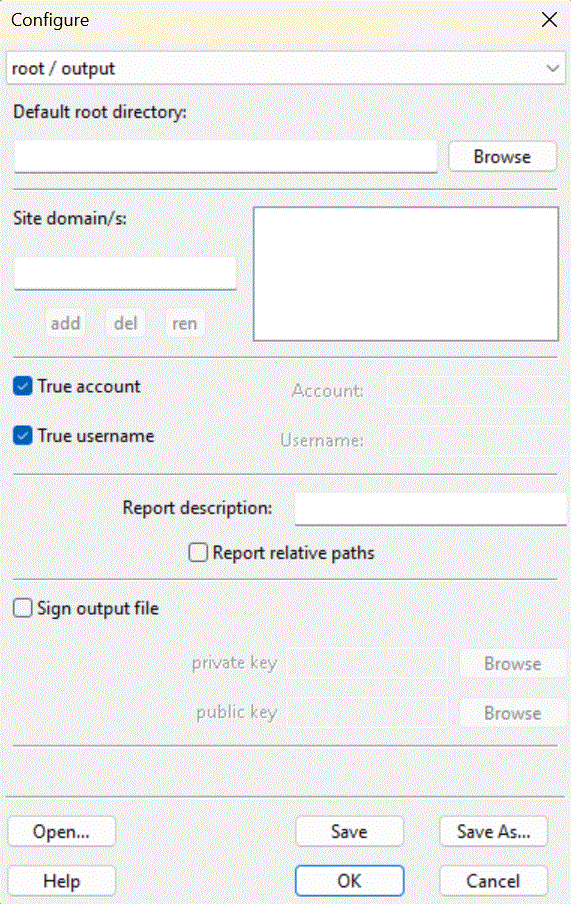

The root / output panel is part of the Configure Dialogue.

This panel allows you to provide important details regarding the website to be analysed.
Here you specify the root, the topmost directory, of the site you want to analyse. This directory contains the source HTML, and probably many other files, that make up the website.
Websites (normally) have domains, often more than one domain. You can specify those here. For example, the domains for SSC are dylanharris.org and www.dylanharris.org.
Some websites also have virtual directories, which you can specify in the virtual and validation panel.
Here, you see a listedit control to specify the domain/s that your website servers. If it serves a number of sites, such as both example.com and www.example.com, add all names.
When ssc outputs its nit report, it normally identifies the user and account used to produce the report. Although generally useful, this can make certain types of testing difficult. Users can deselect true account and true username and substitute an alternative.
ssc can sign it’s report. For signing, it needs a private key and corresponding public key, such as those generated by utilities like openssl or libressl. It uses the public key to validate the report signed by the private key.